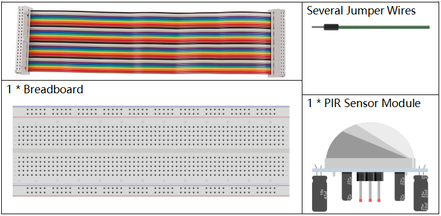
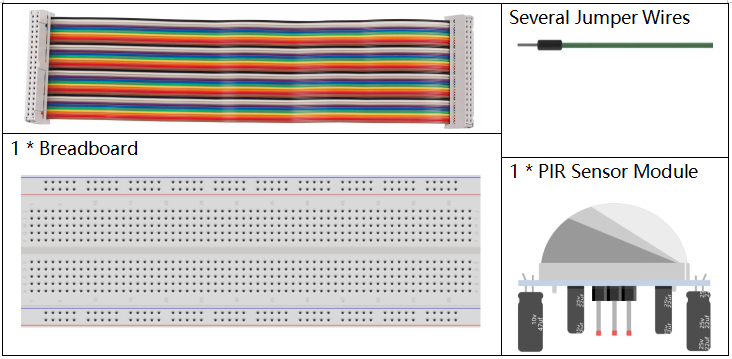

Bemerkung
Hallo und willkommen in der SunFounder Raspberry Pi & Arduino & ESP32 Enthusiasten-Gemeinschaft auf Facebook! Tauchen Sie tiefer ein in die Welt von Raspberry Pi, Arduino und ESP32 mit anderen Enthusiasten.
Warum beitreten?
Expertenunterstützung: Lösen Sie Nachverkaufsprobleme und technische Herausforderungen mit Hilfe unserer Gemeinschaft und unseres Teams.
Lernen & Teilen: Tauschen Sie Tipps und Anleitungen aus, um Ihre Fähigkeiten zu verbessern.
Exklusive Vorschauen: Erhalten Sie frühzeitigen Zugang zu neuen Produktankündigungen und exklusiven Einblicken.
Spezialrabatte: Genießen Sie exklusive Rabatte auf unsere neuesten Produkte.
Festliche Aktionen und Gewinnspiele: Nehmen Sie an Gewinnspielen und Feiertagsaktionen teil.
üëâ Sind Sie bereit, mit uns zu erkunden und zu erschaffen? Klicken Sie auf [hier] und treten Sie heute bei!
3.1.1 Zähleinrichtung
Einführung
In diesem Projekt erstellen wir ein Zählsystem mit Ziffernanzeige, bestehend aus einem PIR-Sensor und einer 4-stelligen Segmentanzeige. Sobald der PIR-Sensor erkennt, dass jemand vorbeigeht, wird die Zahl auf der 4-stelligen Segmentanzeige um 1 erhöht. Dieser Zähler kann verwendet werden, um die Anzahl der Personen zu zählen, die einen Durchgang passieren.
Benötigte Komponenten
Für dieses Projekt benötigen wir die folgenden Komponenten.
 

Schaltplan
T-Board Name |
physical |
wiringPi |
BCM |
GPIO17 |
Pin 11 |
0 |
17 |
GPIO27 |
Pin 13 |
2 |
27 |
GPIO22 |
Pin 15 |
3 |
22 |
SPIMOSI |
Pin 19 |
12 |
10 |
GPIO18 |
Pin 12 |
1 |
18 |
GPIO23 |
Pin 16 |
4 |
23 |
GPIO24 |
Pin 18 |
5 |
24 |
GPIO26 |
Pin 37 |
25 |
26 |
Experimentelle Verfahren
Schritt 1: Bauen Sie den Schaltkreis auf.

Schritt 2: Wechseln Sie zum Codeverzeichnis.
cd ~/davinci-kit-for-raspberry-pi/python-pi5
Schritt 3: Führen Sie die ausführbare Datei aus.
sudo python3 3.1.1_CountingDevice_zero.py
Nachdem der Code ausgeführt wurde, wird die Zahl auf der 4-stelligen Segmentanzeige um 1 erhöht, wenn der PIR-Sensor jemanden passieren sieht.
An dem PIR-Modul gibt es zwei Potentiometer: eines zur Einstellung der Empfindlichkeit und das andere zur Einstellung der Erkennungsdistanz. Um eine optimale Funktion des PIR-Moduls zu gewährleisten, sollten Sie beide im Uhrzeigersinn bis zum Anschlag drehen.

Warnung
Wenn die Fehlermeldung RuntimeError: Cannot determine SOC peripheral base address angezeigt wird, lesen Sie bitte Wenn gpiozero nicht funktioniert.
Code
Bemerkung
Sie können den unten stehenden Code modifizieren, zurücksetzen, kopieren, ausführen oder stoppen. Bevor Sie das tun, gehen Sie bitte zum Quellcodepfad wie raphael-kit/python-pi5. Nachdem Sie den Code geändert haben, können Sie ihn direkt ausführen, um das Ergebnis zu sehen.
#!/usr/bin/env python3
from gpiozero import OutputDevice, MotionSensor
# Initialisieren des PIR-Bewegungssensors an GPIO 26
pir = MotionSensor(26)
# Initialisieren der Schieberegisterpins
SDI = OutputDevice(24) # Serieller Dateneingang
RCLK = OutputDevice(23) # Register-Taktsignal
SRCLK = OutputDevice(18) # Schieberegister-Taktsignal
# Initialisieren der 7-Segment-Anzeigepins
placePin = [OutputDevice(pin) for pin in (10, 22, 27, 17)]
# Definieren der Zifferncodes für die 7-Segment-Anzeige
number = (0xc0, 0xf9, 0xa4, 0xb0, 0x99, 0x92, 0x82, 0xf8, 0x80, 0x90)
# Zähler für die angezeigte Zahl
counter = 0
def clearDisplay():
# Löscht die Anzeige, indem alle Segmente ausgeschaltet werden
for _ in range(8):
SDI.on()
SRCLK.on()
SRCLK.off()
RCLK.on()
RCLK.off()
def hc595_shift(data):
# Verschiebt Daten in das 74HC595-Schieberegister
for i in range(8):
SDI.value = 0x80 & (data << i)
SRCLK.on()
SRCLK.off()
RCLK.on()
RCLK.off()
def pickDigit(digit):
# Aktiviert eine spezifische Ziffer der 7-Segment-Anzeige
for pin in placePin:
pin.off()
placePin[digit].on()
def display():
# Aktualisiert die Anzeige mit dem aktuellen Zählerstand
global counter
clearDisplay()
pickDigit(0)
hc595_shift(number[counter % 10])
clearDisplay()
pickDigit(1)
hc595_shift(number[counter % 100//10])
clearDisplay()
pickDigit(2)
hc595_shift(number[counter % 1000//100])
clearDisplay()
pickDigit(3)
hc595_shift(number[counter % 10000//1000])
def loop():
# Hauptprogrammschleife zur Aktualisierung der Anzeige und Überprüfung auf Bewegung
global counter
currentState = 0
lastState = 0
while True:
display()
currentState = 1 if pir.motion_detected else 0
if currentState == 1 and lastState == 0:
counter += 1
lastState = currentState
try:
loop()
except KeyboardInterrupt:
# Schaltet alle Pins aus, wenn das Skript unterbrochen wird
SDI.off()
SRCLK.off()
RCLK.off()
pass
Code-Erklärung
Diese Zeile importiert die Klassen
OutputDeviceundMotionSensoraus der Bibliothekgpiozero.OutputDevicekann eine LED, ein Motor oder jedes Gerät sein, das Sie als Ausgabe steuern möchten. DerMotionSensorist typischerweise ein PIR-Sensor (Passiver Infrarotsensor) zur Bewegungserkennung.#!/usr/bin/env python3 from gpiozero import OutputDevice, MotionSensor
Initialisiert den PIR-Bewegungssensor, der an den GPIO-Pin 26 angeschlossen ist.
# Initialisieren des PIR-Bewegungssensors an GPIO 26 pir = MotionSensor(26)
Initialisiert GPIO-Pins, die mit dem seriellen Dateneingang (SDI), dem Register-Taktsignal (RCLK) und dem Schieberegister-Taktsignal (SRCLK) des Schieberegisters verbunden sind.
# Initialisieren der Schieberegisterpins SDI = OutputDevice(24) # Serieller Dateneingang RCLK = OutputDevice(23) # Register-Taktsignal SRCLK = OutputDevice(18) # Schieberegister-Taktsignal
Initialisiert die Pins für jede Ziffer der 7-Segment-Anzeige und definiert die Binärcodes für die Anzeige der Zahlen 0-9.
# Initialisieren der 7-Segment-Anzeigepins placePin = [OutputDevice(pin) for pin in (10, 22, 27, 17)] # Definieren der Zifferncodes für die 7-Segment-Anzeige number = (0xc0, 0xf9, 0xa4, 0xb0, 0x99, 0x92, 0x82, 0xf8, 0x80, 0x90)
Löscht die 7-Segment-Anzeige, indem alle Segmente ausgeschaltet werden, bevor die nächste Ziffer angezeigt wird.
def clearDisplay(): # Löscht die Anzeige, indem alle Segmente ausgeschaltet werden for _ in range(8): SDI.on() SRCLK.on() SRCLK.off() RCLK.on() RCLK.off()
Verschiebt ein Byte Daten in das 74HC595-Schieberegister und steuert damit die Anzeigesegmente.
def hc595_shift(data): # Verschiebt Daten in das 74HC595-Schieberegister for i in range(8): SDI.value = 0x80 & (data << i) SRCLK.on() SRCLK.off() RCLK.on() RCLK.off()
Wählt aus, welche Ziffer der 7-Segment-Anzeige aktiviert werden soll. Jede Ziffer wird von einem separaten GPIO-Pin gesteuert.
def pickDigit(digit): # Aktiviert eine spezifische Ziffer der 7-Segment-Anzeige for pin in placePin: pin.off() placePin[digit].on()
Initiiert die Anzeige für die Einerziffer zuerst, gefolgt von der Aktivierung der Anzeige für die Zehnerziffer. Anschließend werden die Anzeigen für die Hunderter- und Tausenderziffern in dieser Reihenfolge aktiviert. Diese schnelle Abfolge von Aktivierungen erzeugt die Illusion einer kontinuierlichen vierstelligen Anzeige.
def display(): # Aktualisiert die Anzeige mit dem aktuellen Zählerstand global counter clearDisplay() pickDigit(0) hc595_shift(number[counter % 10]) clearDisplay() pickDigit(1) hc595_shift(number[counter % 100//10]) clearDisplay() pickDigit(2) hc595_shift(number[counter % 1000//100]) clearDisplay() pickDigit(3) hc595_shift(number[counter % 10000//1000])
Definiert die Hauptprogrammschleife, in der die Anzeige kontinuierlich aktualisiert wird und der Zustand des PIR-Sensors überprüft wird. Wenn eine Bewegung erkannt wird, wird der Zähler erhöht.
def loop(): # Hauptprogrammschleife zur Aktualisierung der Anzeige und Überprüfung auf Bewegung global counter currentState = 0 lastState = 0 while True: display() currentState = 1 if pir.motion_detected else 0 if currentState == 1 und lastState == 0: counter += 1 lastState = currentState
Führt die Hauptprogrammschleife aus und stellt sicher, dass das Skript mit einem Tastaturbefehl (Ctrl+C) unterbrochen werden kann, wobei alle Pins für einen sauberen Ausstieg ausgeschaltet werden.
try: loop() except KeyboardInterrupt: # Schaltet alle Pins aus, wenn das Skript unterbrochen wird SDI.off() SRCLK.off() RCLK.off() pass